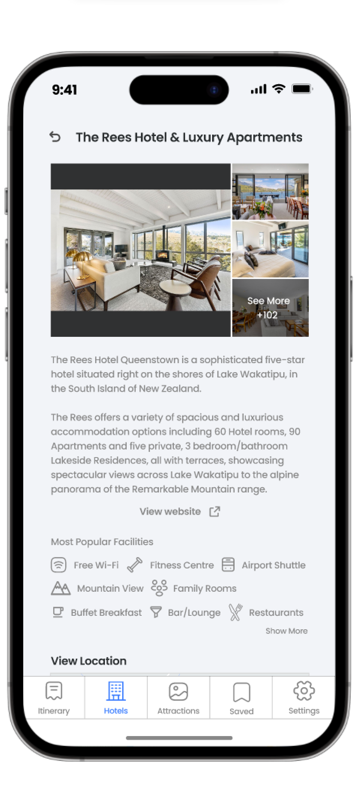
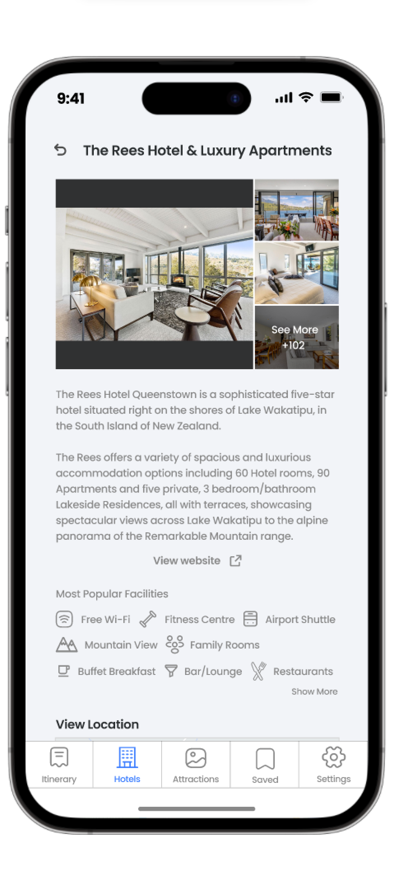
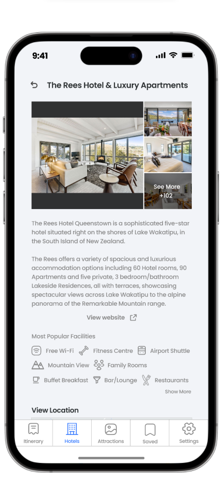
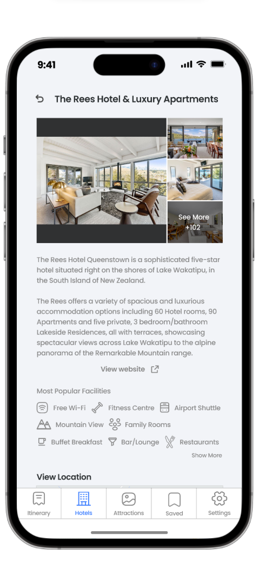

Travel Buddy
Planning travel made easy


 





6 out of 17 respondents (35%) find it difficult to collaborate with other people when planning their trip

6 out of 17 respondents (35%) find it difficult to document and keep track of their itinerary.

Majority of respondents would prefer to work on the itinerary in their own time than in a group
14 out of 17 respondents (82%) use Google Sheets/Google Docs to plan their itinerary